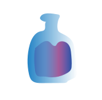
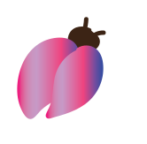
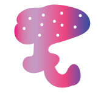

ПОМОГИ ЛЯГУШКЕ
Лавка с магическими зельями " Снадобь"
Купить зелье Все о лавке

Зелье
Зелье из кореандора с добавлением лягушачих лапок.С помощью него, можно превратить человека в лягушку.

Жук
Жук-навозник аппетитное лакомство для лягушки.Не обладает никакими магическими свойствами.
Зелье
Зелье с анчоуссами с добавлением молока.С помощью него можно превратиться в корову.

Гриб
Гриб аппетитное лакомство для лосей.Для лягушек оно опасно.Вызывает галюцинацию.
Зелье
Зелье с персиком.Облегчает приминение другого зелья, и помогает превратиться обратно в человека.
Мотыльки
Мотыльки нельзя есть,они слишком милые.